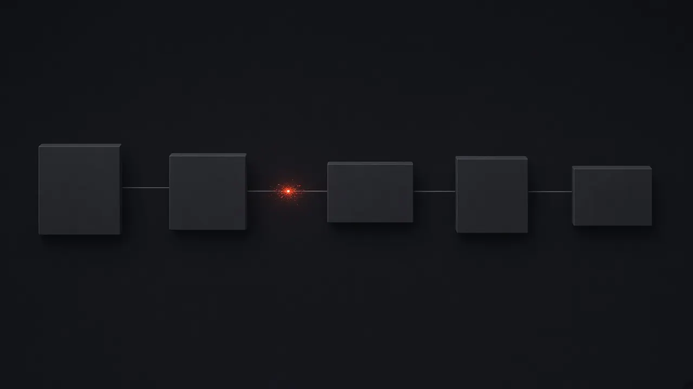

Sans coordination
Le document est extrait. Un collaborateur choisit le dossier, vérifie le contrat, contrôle les doublons, prépare la saisie, suit l’exception, constate la fin.
La transformation
Une entreprise ne fonctionne pas logiciel par logiciel. Elle fonctionne par des processus qui traversent les équipes, les données et les outils.
EXIOR conçoit la structure qui permet de les piloter comme un ensemble : orchestrateur, agents, outils, garde-fous.
990 € · Livraison sous 7 jours ouvrés

Le principe tient en cinq temps. Chacun a un responsable possible : règle, agent ou personne.
Email, document, échéance, mise à jour, demande d’un collaborateur.
Contexte, règles et données nécessaires, dans les accès définis.
La tâche va au logiciel, à l’agent ou à la personne en mesure de l’exécuter.
Actions autorisées, validations sensibles, exceptions.
Les étapes importantes peuvent être enregistrées pour les utilisateurs habilités.
Schéma cible. L’implémentation est une prestation distincte. Rien ici n’est un système déjà en service.
Comptabilité, CRM, messagerie, dossiers, banques, logiciels métier. Une source fait foi par objet.
API quand elles existent. Sinon, la limite est écrite et l’action reste humaine.
Événements, états, reprises. Il ne décide pas à la place des règles.
Analyse, recherche, préparation, contrôle. Chacun a des outils et un périmètre.
Garde-fous, évaluation de la sortie, arrêt si le cas est sensible.
Écriture seulement là où la permission et la règle l’autorisent.
Trace, exceptions, indicateur lu par le responsable. Pas un tableau de bord livré clé en main.
Les composants décrivent l’architecture cible. Leur implémentation est une prestation distincte.
Le document est extrait. Un collaborateur choisit le dossier, vérifie le contrat, contrôle les doublons, prépare la saisie, suit l’exception, constate la fin.
Le processus peut identifier le contexte, contrôler les règles, préparer l’opération dans le logiciel autorisé, soumettre le cas sensible, relancer le suivi, documenter l’état. Ceci décrit un déploiement, pas les 990 €.
Le sujet est la chaîne de coordination, pas l’extraction de trois champs.